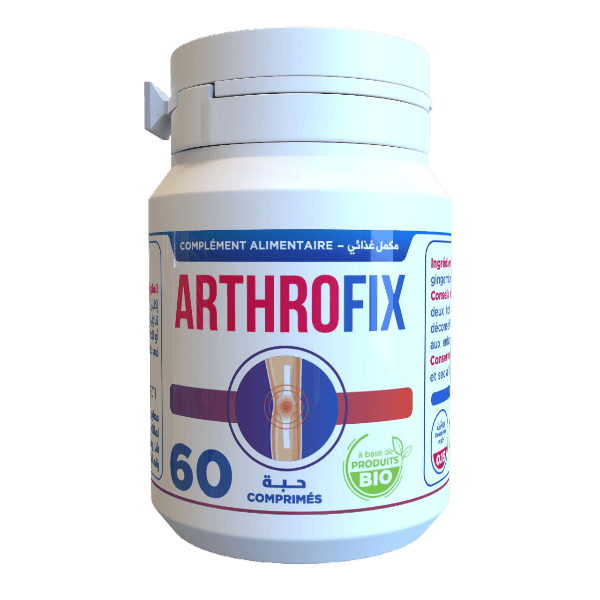

أنقذ زوجته من الإعاقة وساعد العديد من الناس توقف عن المعاناة من آلام المفاصل!
مقابلة متعمقة مع طبيب مفاصل استثنائي!
ضيفنا اليوم هو البروفيسور والعالم الاستثنائي محمود
- مرحبا، محمود ! اخبرنا قليلا عن نفسك.
مرحبًا، لا يوجد شيء غير عادي في خلفيتي! لقد ولدت ونشأت في اسرة بسيطة وأكملت دراستي الطبية بإمتياز بعد تخرجي من الجامعة عام 1995. وأثناء دراستي، التقيت بزوجتي المستقبلية كارمن . ومن ذلك الوقت وحتى عام 2014 عملت كطبيب عظام.
- جيد ! لكن ماذا حدث عام 2014 ولماذا قررت الإعتزال عن مهنتك ؟
في عام 2012، تم تشخيص إصابة كارمن بإلتهاب المفاصل العظمي في المفاصل والركبة. لم أكن أتخيل أبدًا أن مثل هذه المشكلة الخطيرة التي قد تجعل شخصًا ما يستخدم كرسيًا متحركًا لمدة 2-3 سنوات ويؤثر على عائلتي!
يجب أن أعترف أنه كان وقت تغيير كبير في حياتنا، على الرغم من أنه بدا في ذلك الوقت وكأنه اختبار لا يطاق. لمدة عامين جربنا كل شيء: المساج الطبيعي، والحد من النشاط البدني، واستخدام الفيتامينات ، والمواد الهلامية، و الكريمات . كل شيء لم ينجح. لم يحدث شيء، لقد استسلمنا. وكانت كارمن قد بدأت بالفعل في الارتباك بسبب الألم اليومي، فتوقفت عن الخروج ولم تعد قادرة على التحرك في أرجاء المنزل.
كنا على استعداد لتآكل المفاصل تمامًا والبقاء على كرسي متحرك في غضون ستة أشهر تقريبًا! الشيء الوحيد الذي يمكن أن يساعد هو إجراء عملية جراحية كبيرة، لكن ذلك سيكلفنا الكثير من المال وفرصة الحصول على نتيجة إيجابية هي 2٪ .
بفضل التعليم الطبي الذي حصلت عليه، لم أصدق أنني لا أستطيع فعل أي شيء لمساعدة من أحب. أشعر بخيبة أمل كبيرة ألا توجد فرص لمنح الناس حياة صحية وأكثر سعادة؟ ولكن من ناحية أخرى، أدركت: "لم يفت الأوان بعد" وبدأت بحثي.
- ماذا اكتشفت؟ إخبرنا المزيد.
عندما تدرك أن زوجتك قد لا تتمكن من المشي خلال السنوات القليلة القادمة، فسوف تفعل كل شيء لتجنب ذلك. قررت أن أجد حلاً بنفسي لمساعدة كارمن بأي ثمن. قرأت عن كل ما يتعلق بشكل مباشر أو غير مباشر بالتهاب المفاصل. لقد درست علم وظائف الأعضاء وعلم النفس والكيمياء الحيوية وغيرها الكثير. لقد أنفقت كل أموالي تقريبًا للحصول على التدريب على يد أفضل الخبراء في العالم، الذين يعرفون المزيد عن التهاب المفاصل.
في ديسمبر 2014، لاحظت اتجاهًا مثيرًا للاهتمام: فقد تم ذكر مكونات طبيعية يمكنها القضاء على مشاكل المفاصل تماماً . ووجدت أنه باستخدام هذه المكونات كقاعدة وبعض المكونات الاخرى ، يمكن الحصول على منتج أفضل لتحسين صحة المفاصل. و التخلص من مشاكلها إلى الأبد
لقد فوجئت جدًا: لم يتم وجود مستخلص الكركمين الذي أحتاجه في أي مكان . لقد بحثت في العديد من الأماكن ، الخاصة والعامة، والإنترنت والمتخصصين المحليين - دون جدوى. وأخيراً وجدت طريقة للحصول على كل ما أحتاجه. وبعد شهر، تلقيت حزمة تحتوي على مستخلص الكركمين . لكنني تفاجأت مرة أخرى: لم أتمكن من العثور على مختبرات تحتوي على المواد اللازمة لصنع المنتج . والشيء الجيد هو أنه كان لدي أصدقاء من الجامعة ساعدوني في ذلك. وبعد 3 أسابيع تمكنت من تحضير تركيبة المنتج. قررت أنا و كارمن تجربة هذا المنتج.
الله سبحانه وتعالى!
- ماذا حدث؟
تحسنت صحة كارمن كل يوم. بداية، انخفض التورم في الركبة وبدأ الألم يقل ليلاً. على الأقل بدأت تنام بسلام. وبعد مرور 20 يومًا، أصبحت زوجتي قادرة بالفعل على المشي بشكل جيد دون مشاكل في المنزل والقيام بأنشطتها اليومية. بعد شهر من الإستخدام الدائم و المستمر . كانا سعيدة جدًا. كنت سعيدا أنا أيضاً جداً . لقد كان انتصارا حقيقيا!
ذات مساء، سألتني كارمن كم عدد الأشخاص في العالم الذين يعانون من مشاكل المفاصل؟ في الحقيقة، هذا السؤال كان يؤرقني منذ سنوات طويلة، عدد كبير من الناس في العديد من الدول و خاصةً الدول العربية يعانون من مشاكل المفاصل ولا يحصلون على رعاية جيدة لأن المستشفيات نفسها لا تعرف كيف تساعد هؤلاء الناس.!
ثم سألتني سؤالاً غير حياتي إلى الأبد: "ألا يمكنك مساعدتهم بنفس الطريقة التي ساعدتني بها؟ اجعلهم سعداء؟ شعرت بالحب لها أكثر فأكثر كما لو كانت هذه هي المرة الأولى. زوجتي هي واحدة من أفضل الأشياء التي حدثت في حياتي، وأحيانًا أشعر أنني لا أستحق شخصًا مثلها وقد استغرق الأمر حوالي 3 سنوات لإتقان الصيغة وإنشاء مكمل غذائي يطلق عليه اسم ArthroFix وهو حاليًا المنتج الأفضل والأكثر فعالية للتخلص من مشاكل المفاصل و ألام المفاصل .
- يبدو مثيرا للاهتمام للغاية! أخبرنا المزيد عن المكمل الغذائي ArthroFix .
كما قلت من قبل، ArthroFix هو مكمل غذائي طبيعي 100% ، مصنوع من مكونات طبيعية لها تأثير عالي على ألام المفاصل و مشاكلها .
هل هذا المنتج موجود في الجزائر ؟
نعم , المنتج يتم تصنيعه في الجزائر بمكونات عالمية تم إستيرادها من اوروبا نظراً لعدم توافرها في الجزائر و هو يصنع بأيادي جزائرية و هو منتج طبيعي 100%
لقد فعلت الشركة المصنعة للمنتج في الجزائر شيئًا لم يفعله أحد من قبل. ArthroFix هو برنامج يدعم الصناعة الوطنية . و هو عبارة عن برنامج تخفيض لجميع الجزائريين فقط ! .
لسوء الحظ، المكونات اللازمة لصنع هذا المكمل الغذائي لم تكن متاحة في الجزائر بسهولة ، لذلك الشركة المصنعة قامت بإستيرادها من جميع أنحاء العالم.
بسبب المكونات الفريدة، فإن ArthroFix فعال في الوقاية من جميع مشاكل المفاصل:
- التهاب المفاصل (الروماتيزم)؛
- هشاشة العظام ( تآكل العظام الناعمة في المفاصل) ؛
- الداء العظمي الغضروفي.
- التهاب العظم والغضروف.
- هشاشة العظام؛
- تلف الغضروف المفصلي.
هل مكونات هذا المكمل الغذائي فعلاً طبيعية 100% و ليس به أي كيمياء ؟
نعم بالفعل المنتج طبيعي 100% و سوف أسرد لكم الأن مكوناته :
- مستخلص الكركمين
- مستخلص الفلفل الأسود
- مستخلص الزنجبيل :
- مستخلص إكليل الجبل :
- مستخلص مخلب الشيطان
- زيت الثوم
مضاد للالتهابات:
الكركمين هو المركب النشط في الكركم ويعتبر مضاداً قوياً للالتهابات. يمكن أن يساعد في تقليل التهاب المفاصل وتخفيف الألم.
مضاد للأكسدة:
يمتلك خصائص مضادة للأكسدة تساعد في حماية الخلايا من التلف الذي تسببه الجذور الحرة، مما يحسن من صحة المفاصل بشكل عام.
تحسين حركة المفاصل:
الكركمين يمكن أن يساعد في تحسين مرونة المفاصل وحركتها، مما يقلل من الشعور بالصلابة والألم.
زيادة امتصاص الكركمين:
يحتوي الفلفل الأسود على البيبيرين، الذي يزيد من امتصاص الكركمين في الجسم بنسبة تصل إلى 2000%، مما يجعل الكركمين أكثر فعالية.
تحفيز الدورة الدموية:
الفلفل الأسود يساعد في تحسين الدورة الدموية، مما يمكن أن يساعد في تقليل الالتهاب وتحسين صحة المفاصل.
تخفيف الألم:
الزنجبيل معروف بخصائصه المسكنة للألم، والتي يمكن أن تساعد في تخفيف آلام المفاصل.
مضاد للالتهابات: يمتلك الزنجبيل خصائص مضادة للالتهابات يمكن أن تقلل من تورم المفاصل وتخفيف الألم.
تحسين الهضم:
تحسين عملية الهضم يمكن أن يساعد في تقليل الالتهابات في الجسم بشكل عام، بما في ذلك المفاصل.
مضاد للأكسدة:
يحتوي إكليل الجبل على مضادات أكسدة قوية تساعد في حماية المفاصل من التلف.
تحسين الدورة الدموية:
يساعد في تحسين الدورة الدموية مما يعزز من وصول المغذيات إلى المفاصل وتقليل الالتهاب.
خصائص مضادة للالتهاب:
يمكن أن يساعد في تقليل الالتهاب والألم المرتبط بالمفاصل.
مسكن طبيعي:
معروف بخصائصه المسكنة التي تساعد في تخفيف آلام المفاصل والعضلات.
مضاد للالتهابات:
يحتوي على مركبات مضادة للالتهابات يمكن أن تساعد في تقليل تورم المفاصل وتحسين مرونتها.
مضاد للالتهابات:
يحتوي الثوم على مركبات مضادة للالتهابات تساعد في تقليل التهاب المفاصل.
مضاد للأكسدة:
يساعد في حماية المفاصل من التلف الناتج عن الجذور الحرة.
تحسين الدورة الدموية:
يعزز من تدفق الدم مما يساعد في توصيل المغذيات والأكسجين إلى المفاصل، مما يقلل من الألم ويحسن من صحتها.
باستخدام هذه المكونات معاً، يمكن أن يوفر المكمل الغذائي دعماً شاملاً لصحة المفاصل وتخفيف الآلام المرتبطة بها.
أين يمكننا شراء ArthroFix؟
لسوء الحظ، لا يمكن شراؤها في الصيدليات. الشركة المصنعة في الجزائر تقوم ببيعه عبر الانترنت فقط ArthroFix و أيضاً تقدم تخفيض كبير لجميع الجزائريين حصراً
- ماذا تريد أن تقول لقرائنا؟
أريد حقًا أن اقول ان هذا المنتج الذي قامت بتطوريه الأيادي الجزائرية - صدقوني، لا يوجد بديل لهذا المنتج في الصيدليات.
من هذا المنطلق، قررت الشركة المصنعة تنظيم تخفيض بنسبة 65% عند شرائك دورة ArthroFix! من الآن فصاعدا، يمكن للجميع تجربة حظهم والاستفادة من خصم يصل إلى 65% عند طلب ArthroFix!يمكنك الاستفادة من هذا التخفيض الخاص حتى . وبعد ذلك التاريخ، للأسف، لن تتمكن من الحصول على هذا المنتج بهذا السعر المنخفض.
اتمنى لك صحة جيدة! إذا كنت تعاني من مشاكل صحية، فلن يجعلك أي مبلغ من المال سعيدًا!
- شكرًا جزيلاً لك دكتور محمود على صدقك في مقابلتنا! وفي حديثي مع قرائنا، أود أن أقول: من الأفضل والأسهل أن تفكر الآن في صحة مفاصلك بدلاً من عدم القدرة على المشي على الإطلاق! كن بصحة جيدة!

العبوات تنفد بسرعة!
العبوات المتبقية في عرض التخفيض :
العرض ساري حتى (ينطبق هذا التاريخ أيضًا).
تذكر ! الدفع عن الإستلام و ليس عليك دفع أي شيء قبل الإستلام
جرب حظك!
انقر على العجلة! حاول الحصول على .
ArthroFix بتخفيض يصل إلى 65% !
انقر على زر "إستدارة"
كل ما عليك فعله هو إدخال اسمك ورقم هاتفك
أسرع! الوقت المتبقي لإنتهاء التخفيض :
5990 DZD
عند شرائك دورة ArthroFix
تهانينا!
سوف تحصل على المنتج بتخفيض 65% !
تعليقات: